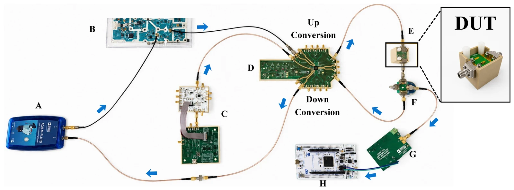

The 26 GHz bench as used in LATINCOM 2026. The project page explains each board.
A low-cost SDR testbed for 26 GHz 5G hardware
RF and mmWave. Since September 2025, in Dr. Hugo Condori's group at UPB, with researchers from Universidad Mayor de San Andrés.
- Problem
- Characterizing mmWave amplifiers and filters normally takes vector signal generators, signal analyzers and network analyzers that cost upwards of $100,000 and that many labs, ours included, do not have.
- My role
- I calibrate the bench (PLL synthesizer, RMS power detectors, SDR), write the Python and MATLAB scripts that automate acquisition and processing, and characterized a power amplifier and a band-pass filter from measured data only, which became my first-author paper. I also collected the data for the power-regulation work and took part in the predistortion experiments.
- Result
- Six IEEE conference papers. The testbed reaches a residual EVM of 1.27% with 256-QAM 5G NR at 26 GHz, resolves a filter's 24.25 to 28 GHz passband without a network analyzer, and exposes AM-AM compression from raw I/Q samples. With memory-polynomial predistortion the transmitter's EVM falls from 6.47% to 2.65%.